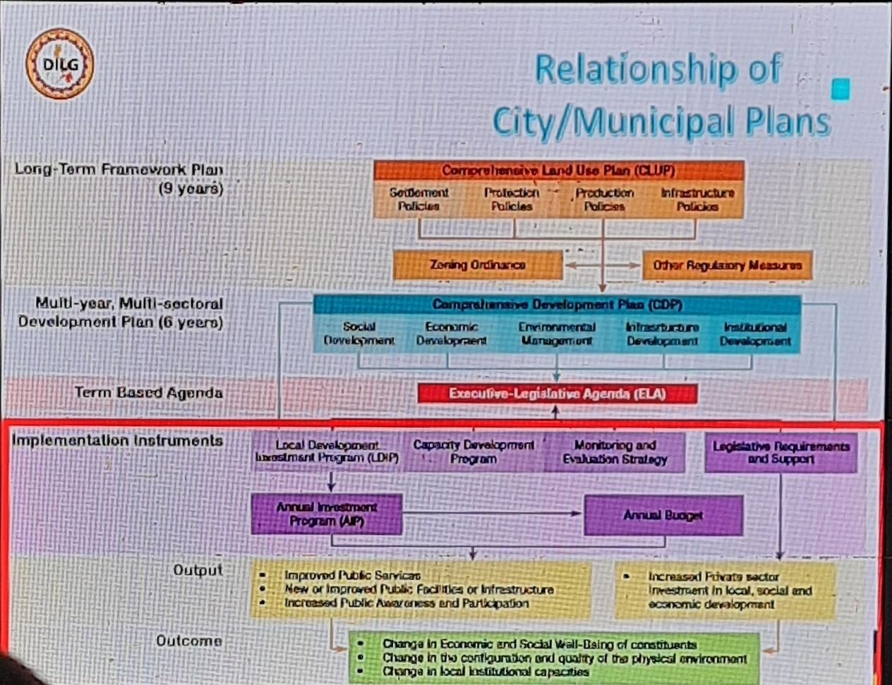

Renaissance · Research & Public Conversation · Case
Youth Voice in Local Development Planning
In 2023, I was designated as the Youth Representative under the Social Sector Technical Working Group of Dinalupihan's Municipal Planning Team. The experience became a lesson in evidence, representation, and the limits of what any one person can see.
Engagement record
The experience at a glance.
- Institution
- Dinalupihan Municipal Planning Team
- Engagement
- Comprehensive Development Plan preparation
- Role
- Youth Representative, Social Sector Technical Working Group
- Year
- 2023
- Location
- Dinalupihan, Bataan
- Contribution
- Youth-sector perspective, questions, and interpretation
- Approach
- Evidence, interpretation, consultation, and perspective-taking
Why this case matters
A seat at the table is useful only if it widens what the table can see.
My formal designation as Youth Representative gave me a place inside Dinalupihan's development-planning process. But representation, I realized, is not the same as simply being present in the room.
The role carried a harder question: what could I contribute that would make the conversation more complete? I was there to bring a youth-sector perspective, but I was also conscious that my own experience could never stand in for every young person in Dinalupihan.
That made the work less about speaking with certainty and more about asking better questions. What were we seeing clearly? What were we assuming? Which experiences were visible in the discussion, and which ones remained outside it?
Documentary record
Inside the planning conversation.
The workshop brought together participants from different sectors and institutional roles as part of the Comprehensive Development Plan preparation process.


Supporting record
Formal designation in the municipal planning process.
This privacy-redacted executive-order excerpt shows the legal basis for the Municipal Planning Team and the record of my designation as Youth Representative under the Social Sector Technical Working Group.
The work
Planning is partly the work of recognizing the shadows on the wall.
I kept returning to Plato's Allegory of the Cave, which I first encountered as part of my lessons in Social, Economic, and Political Thought. The allegory stayed with me because of its warning about perspective: people can mistake the shadows available to them for the whole of reality simply because those shadows are all they have been able to see.
A planning room is not a cave in the literal sense, and the people inside it are not simply prisoners of ignorance. But the metaphor helped me think about perspective. Every person enters the room from a particular position. Planners see mandates, frameworks, and data. Institutions see operational limits. Communities carry lived experience. Young people may see risks and possibilities through a longer future horizon.
None of those perspectives is automatically false. The danger begins when one partial view is treated as the whole picture.
That is where research and public conversation become useful. Research gives us ways to test what we think we know. Conversation exposes us to realities that our own position may have hidden. Together, they can turn the room toward a wider field of view.
Representation
I was a youth representative. I was not the youth.
That distinction became important to me. A formal designation gave me responsibility, but it did not give me a monopoly on what young people think, need, or experience.
Age can place people inside the same sector without making their lives identical. A young farmer, student, worker, entrepreneur, parent, or out-of-school youth can encounter the same town in very different ways. My own experience was one view among many.
So I began to understand representation as an obligation to remain curious. The task was not to make my perspective louder than everyone else's. It was to use the seat I had been given to ask what was missing, what evidence might challenge the room's assumptions, and which voices had not yet shaped the discussion.
In the language of the cave, representation should not mean replacing one shadow with another. It should help the room recognize that there may be more beyond the wall.
Renaissance
Good planning should make certainty revisable.
Evidence matters because it can correct intuition. Public conversation matters because it can reveal what the evidence, categories, or institutions alone may not capture.
Renaissance, for me, is not novelty for its own sake. It is the willingness to let a better explanation replace the one we arrived with. A planning process becomes more useful when people can examine their assumptions without treating revision as defeat.
What I carry forward
The work is not to escape the cave alone. It is to help widen the view.
I left the experience with a stronger respect for the relationship between evidence and participation. Evidence can discipline a conversation. Participation can reveal where the evidence is incomplete, where categories hide important differences, or where a technically sensible plan meets a very different reality on the ground.
I also became more cautious about the confidence that can come with representation. Being included in a formal process does not mean that your view has become complete. Sometimes inclusion simply gives you a better position from which to notice how much remains unseen.
That is why the Allegory of the Cave stayed with me beyond the classroom where I first encountered it in Social, Economic, and Political Thought. Development planning is not strengthened when one person claims to have stepped into the light and returned with the final answer. It is strengthened when the process helps more people question the shadows they have mistaken for the whole.
Research helps us test what we think is true. Public conversation helps us encounter what our own position cannot show us. The goal is not perfect vision. It is a more honest, evidence-informed, and shared view of the reality we are trying to change.
Creativity → Renaissance
Return to the wider engagement.
Explore Research & Public Conversation for the broader questions around inquiry, evidence, interpretation, exchange, and what happens when ideas are allowed to change.
Research & Public Conversation →